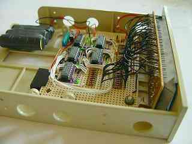
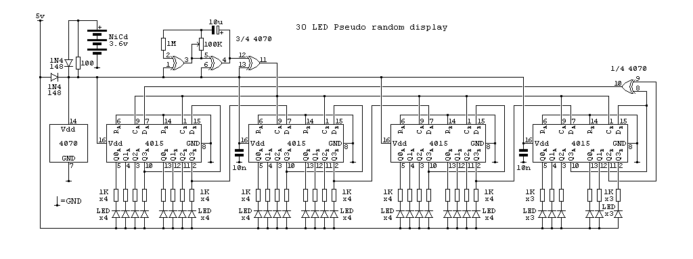
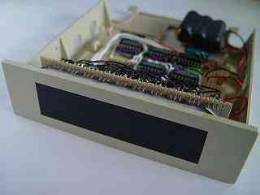

|
|
The best ON light. By Lee Davison. |
|
The circuit.I originally built the first one of these quite a few years back when your average PC was a beige box and, if it was expensive, had an LED display showing the processor clock spee. I gave that one to my brother and, once I'd gathered all the parts together, I built a new one for myself.
 Construction.The circuit is a 31 bit maximal length pseudo random number generator constructed from four dual 4 bit shift registers and one gate from a quad exclusive OR gate. 30 of the bits from this 32 bit shift register are used to drive the LEDs, the two others are used for feedback. The generator is clocked at about 2Hz to give an interesting, but unobtrusive, constantly changing display.
The clock is generated by an oscillator formed by two more of the exclusive OR gates, a 100K variable resistor and a 10uF capacitor. A further 1M resistor is used to stop the capacitor being discharged via the protection diodes on the first gate. This circuit has a fairly slow rise and fall time which may cause clocking problems so this is sped up by the fourth exclusive OR gate. All three gates used to generate the clock are used as inverters with one input tied high.
 Power for the clock and shift registers is provided by the battery when the main 5v is absent. This means that the sequence continues regardless of the main power and does not start, or even fail to start, from the same point each time the main power is turned on. The LEDs are supplied only by the main power and are all reverse biased when the circuit is running from the battery.
 First power on.The display is the most difficult part to construct as this is the very visible part and any defects here will show. The LEDs are mounted on 0.1" stripboard spaced 0.4" between centers in both directions. Surplus 5mm LEDs of various colours were used and all are mounted flush to the board, this is by far the easiest way to get all the heights the same. This board has a couple of eye tags soldered to it which are used to bolt the board to the fron two 3.5" drive mount holes.
A piece of grey tinted perspex was cut to be an inteference fit in the 3.5" drive bezel. This goes some way to hiding the board that the LEDs are mounted on but not far enough. To improve the appearance further a backing was made by drawing up a template and printing it onto thin card. This was then cut out and the holes punched with a hand punch. Once it had been test fitted, the holes are a very snug fit round the LEDs, it was painted matte black to make it almost invisible behind the perspex.
The rest of the electronics are mounted on another piece of stripboard that is bolted to other drive mounting holes, the connection between the two is made with flexible wires. Power is supplied to the main board via a disk drive power connector soldered onto the edge of the board.
A rather large NiCad battery, that powers the number generator when the main power is off, is mounted on a double sided sticky pad at the back of the bay. This battery could be much smaller, a coin cell would probably work, but was what was on hand at the time.
Extras.If the shift registers first power on with all bits low, all the LEDs lit, this state will never change. To force some 1's into the sequence one of the shift register data inputs can be shorted to Vdd for a second or two. This should be enough to get the generator into one of it's maximal length sequence states.
A five second, low res, video of the light running is here.
There is little more on pseudo random number generation here.
| Last page update: 5th March, 2006. | e-mail me
 |